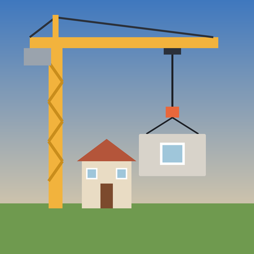
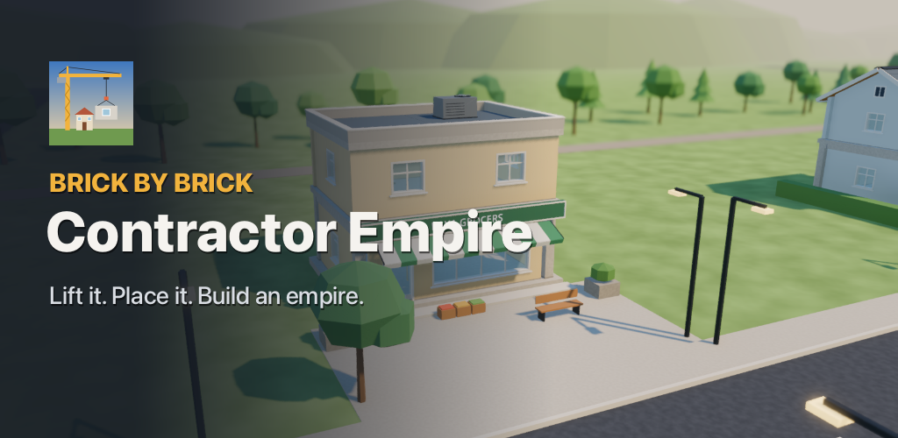

Android · iPhone · iPad · Mac · Steam
Contractor Empire
Brick by brick: start with one plot, one tower crane and a small crew, and build your way to a construction empire. Every wall, beam, slab and sign hangs from a real physics crane.

- Lift and place every piece yourself: slew, trolley, hoist, and fight the sway
- Clear the site, pour the foundation, raise the frame, close the roof, paint and pass inspection
- A two-storey family house and a corner shop with a flat above
- Contracts, land development, rentals, reputation, six company tiers and upgrades
- No ads, no in-app purchases, no data collection, plays fully offline
Türkçe
Bir arsa, bir kule vinç ve küçük bir ekiple başla, adım adım inşaat imparatorluğunu kur. Her duvar, kiriş, döşeme ve tabela gerçek fizikli bir vinçte asılı. Reklam yok, uygulama içi satın alma yok, veri toplanmaz, tamamen çevrimdışı.
Privacy Policy / Gizlilik · Terms of Use / Kullanım Koşulları · Support / Destek